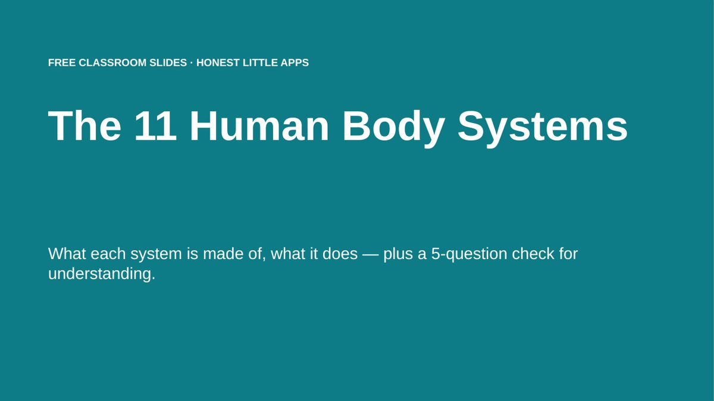

Home › Free Downloads › PowerPoint
Free PowerPoint downloadThe 11 Human Body Systems: Free Slides
A clean 16-slide deck: one slide per body system with what it is made of and what it does, plus a 5-question check for understanding.
⬇ Download the PowerPoint file .pptx · free · no sign-upWorks in Microsoft PowerPoint, Google Slides (File → Import slides) and Apple Keynote. 16:9.

What’s inside
- Overview slide of all 11 systems
- One slide per system: parts and job
- 5-question quiz and answer slide
- Editable text, 16:9
How to use it
- Download and open in PowerPoint, Google Slides or Keynote.
- Teach one system per slide.
- Finish with the quiz.

Body Unpacked: Health AtlasGet it free on the App Store
Questions
Which grades is it for?
Upper elementary to middle school life science, and as a quick review for older students.
What are the 11 body systems?
Integumentary, skeletal, muscular, nervous, endocrine, cardiovascular, lymphatic and immune, respiratory, digestive, urinary and reproductive.
Is it medical advice?
No, it is educational content only.
More free downloads
Daily Water Intake Tracker 2027Shift & Pay Tracker with OvertimeJob Estimate & Invoice TemplateClient Appointment Booking LogSleep Log & Bedtime Routine TrackerScreen Time Tracker: What Your Phone Really CostsBible Reading Tracker: All 66 BooksFamily Emergency Plan TemplateAfter-the-Argument Repair WorksheetBooks of the Bible by Section: Free SlidesWhy Is the Sky Blue and Sunsets Red? Free Slides